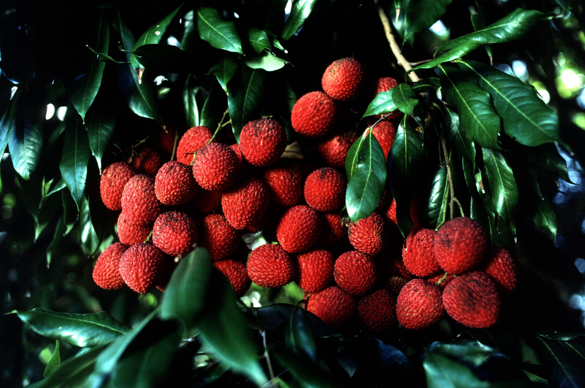
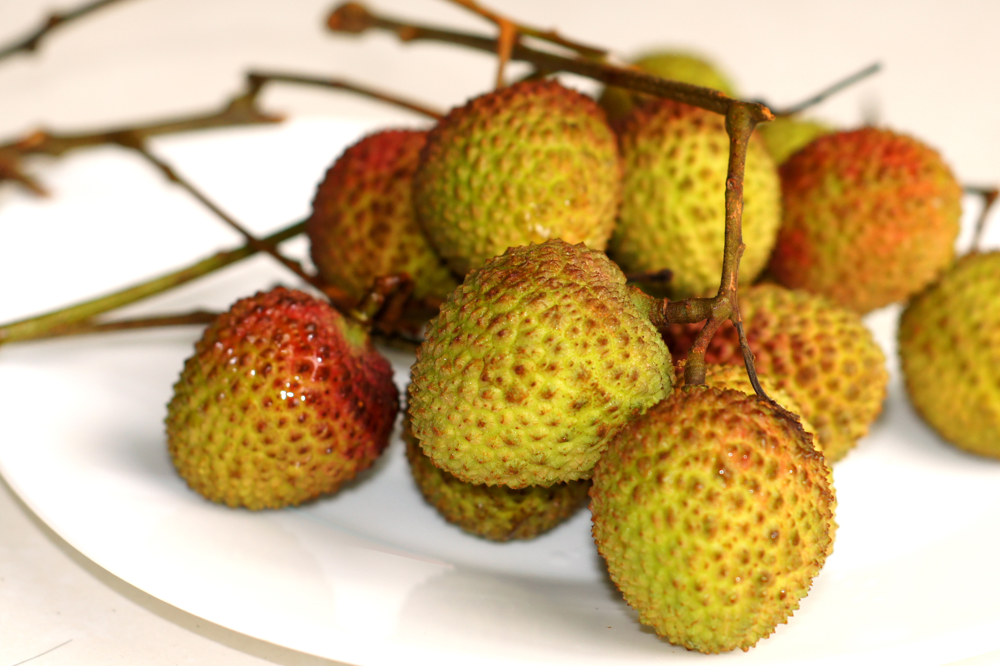

荔枝
熱帶的紅色珍珠
荔枝，這顆小小的熱帶果實，擁有鮮艷的紅色外皮和晶瑩的白色果肉，每年夏季成為消暑的最佳選擇。被譽為「水果中的紅寶石」，荔枝不僅口感甜美，還深受人們的喜愛，尤其在中國文化中，更是象徵著富貴與吉祥。
荔枝外皮呈現紅色或粉紅色，表面有許多細小的凸起，給人一種皺巴巴的感覺，但這正是它的魅力所在。剝開外皮，露出的是白色、透明且多汁的果肉，像是純潔的水晶，入口即化，甜美的滋味直達心底。

來自中國的美麗傳說
荔枝原產於中國，對於中國人來說，它擁有深厚的文化背景。根據古代的傳說，荔枝是帝王的珍品，甚至一度成為了宮廷裡的專屬果實。
據說唐朝的皇帝唐玄宗對荔枝情有獨鍾，為了讓心愛的楊貴妃享用到新鮮的荔枝，專門派遣信使騎馬趕路數千里，運送新鮮的荔枝進宮。
這個故事也使荔枝成為愛情、浪漫的象徵，，與唐朝宮廷的奢華及情感聯繫在一起。

荔枝樹的成長特色
荔枝樹是一種常綠樹，擁有厚實的樹幹和濃密的枝葉。每年夏天，樹木會開出小而白色的花朵，花期約為3-4月。當花朵凋謝後，荔枝果實會在樹枝上長出來，隨著季節的變化，果實慢慢長大，顏色由綠色逐漸變為鮮紅，最終成熟時呈現出鮮艷的紅色或粉紅色。荔枝的果皮薄而光滑，外觀上看似粗糙卻不失美麗，果肉晶瑩剔透，口感甜美。
資料來源: